Google Data Analyst Capstone Project.
Introduction
Hello, I'm Arthur and I will work on the Google Capstone Project. To extract insights from data, I will use my skills in Excel, SQL, R, and Tableau.
Proficient at organizing and manipulating data in Excel, extracting information through SQL queries,performing advanced analysis
and with R,
and creating visually appealing visualizations using Tableau.
I'm excited to apply my skills to real-world challenges in this Google Capstone Project where I chose to work with the Cyclistic bike-share data set.
My objective is to uncover actionable insights that contribute to positive outcomes and drive effective decision-making.
Index
- I. About the Company
- II. Business Statement
- III. Data Collection
- IV. Data Cleaning and Manipulation
- V. Excel Cleaning and Manipulation
- VI. Pivot tables
- VII. SQL Cleaning and Manipulation
- VIII. R-Programming Language Cleaning and Manipulation
- IX. Analysis in SQL
- X. Analysis in R-Programming Language
- XI. Support Visualization
- XII. Cyclistic Bike-Share Dashboard
- XIII. Final Recommendations
I. About the Company
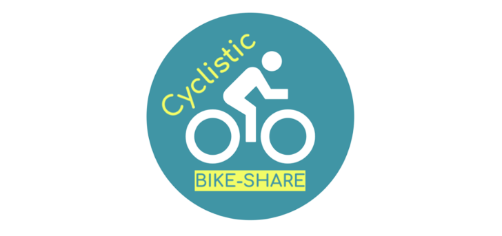
Cyclistic is a The company's marketing strategy focuses on broad consumer segments and offers flexible plans, including single-ride passes, full-day passes, and annual memberships. Finance analysts have determined that annual Members are more profitable than Casual riders. Led by Lily Moreno, the Director of Marketing, is developing an innovative marketing strategy
unlock and return bikes at any station.
The company aims to maximize annual memberships by converting Casual riders for future growth.
using data insights to attract and retain annual Members.
II. Business Statement
To achieve our objectives, we will apply efficient procedures to our available data to ask, prepare, process, analyze, share and act.
Our primary aim is to discern the contrasting characteristics between Casual riders and Members, as well as uncover customer usage trends.
Examining the data and presenting it through compelling visual representations, we will then execute a focused marketing campaign via digital media.
Through this approach, we intend to convert Casual riders into loyal Members, thus maximizing our customer base and overall business success.
III. Data Collection
The Data is collected by DIVVY & the City of Chicago you can download it here.
It was gathered and organized over the last 12 months, starting from April 2022 until March 2023.
Stored in an online database composed of first-party sources indicating high integrity and credibility.
Data privacy issues prohibit personally identifiable information.
Consequently, no connections were made from past purchases to credit card numbers. Not determining if casual riders live in the Cyclistic service area
or if they have purchased multiple single passes.
Respecting the Data License Agreement here, ensuring that all data is used in strict accordance with the terms and conditions.
IV. Data Cleaning and Manipulation
After downloading all 12 zip files they were unzipped in a temporary folder housing the files and using appropriate naming conventions.
Further, I created subfolders for the .CSV and .XLS files to have a copy of the original data.
V. Excel Cleaning and Manipulation
I decided to open each file in Excel to apply those procedures, creating new columns and pivot tables to extract some quick insights.
New Columns:
ride_dateto identify the day when the ride was made, using the formula: =DATE(YEAR(C2),MONTH(C2),DAY(C2))
formatting the column in date dd/mm/yyyy.
day_of_weekto identify the day of the week in numbers where 1 = Sunday and 7 = Saturday, using the formula:=WEEKDAY(C2,1)
formatting the column in number and removing the decimals.
month_dateto identify the month of the year in numbers where 1 = January and 12 = December, using the formula:=MONTH(C2)
formatting the column in Number and removing the decimals.
year_dateto extract only the year, using the formula:=YEAR(C2)
formatting the column in Date"yyyy".
start_timeto identify the starting time of each ride, using the formula=TEXT(C2,"hh:mm:ss")
formatting the column in time "hh:mm:ss".
end_timeto identify the end time of each ride, using the formula=TEXT(D2,"hh:mm:ss")
formatting the column in time "hh:mm:ss".
ride_lengthto calculate the duration of each ride, using the formula =D2-C2
formatting the column in time "hh:mm:ss".
Modify Columns:
started_at and ended_at in custom formatting "dd/mm/yyyy" "hh:mm:ss".
VI. Pivot tables
I decided to create some pivot tables to do some quick calculations and extract some meaningful insights from our data.
Started by creating a pivot table to compare the average ride length during January.
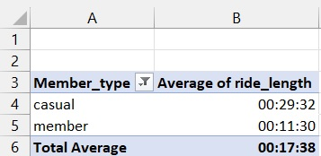
In the second pivot table, we can identify the total amount of rides by each customer type during January.
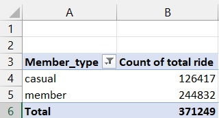
In the third pivot table, let's determine the ride length during the whole week of January month.
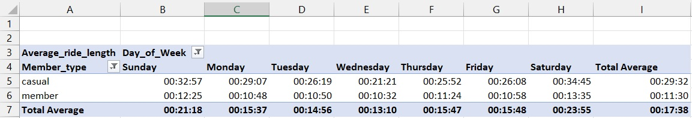
After all modification and cleaning, modified files were saved in the right extensions .XLS and .CSV in the appropriate subfolder.
VII. SQL Cleaning and Manipulation
Since this is such a large data set of 12 months, I decided to move to SQL to continue my analysis. I also used the cloud data platform, Big Query.
I created my bucket repository and uploaded all 12 CSV files, creating a project to operate this dataset.
Now we will transform and divide our 12 months into quarters: Q1, Q2, Q3 and Q4.
VIII. R-Programming Language Cleaning and Manipulation
Additionally, we have also cleaned our data for further analysis using R. Merging all 12 months in a full year.
Checking the data for consistency and structure before merging and after.
Installed R packages:
tidyverse, ggplot2 and lubridate.
New Columns:
date, month, day, year, day_of_week and ride_length. Removed irrelevant data when the bike is taken out of the dock for quality checks or when ride_length is negative.
Created an updated data frame named "(V2)" since data is removed to preserve data integrity.
IX. Analysis in SQL
Since our data set is now structured and clean, we can query it in SQL to extract relevant information.
We can compare the total number of rides between Members and Casuals.
Understand the difference service usage during the week and check which is the busiest day of the week for each member type.
Calculate the average, median, minimum and maximum ride length.
Discover which quarter has the most rides to identify the impact of each season on the number of rides.
Investigate the comparison to understand how those two different customers interactions enable us to identify relevant insights.
Starting by comparing the total number of rides for the first quarter of 2022 and transforming it into a percentage.
We can see that we had 503421 total rides. 74% of them were made by Members and 25% by Casuals.
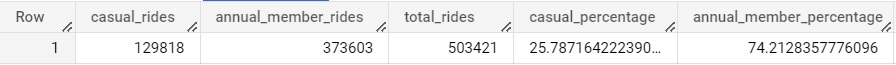
Furthermore, we can gain insights into the weekly usage patterns of these two customers across different days of the week.
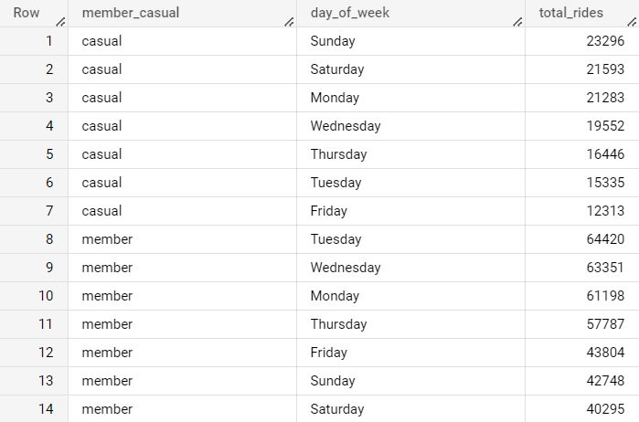
We can determine the busiest day for each customer type. The favourite day of the week is Tuesday for Members who recorded 64420 rides.
In contrast, Sunday is the favourite day of the week for Casuals who recorded 23296 rides.
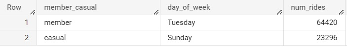
To understand the ride patterns between the two groups of riders, we will calculate key ride length statistics, including the average, maximum, minimum, and median values.
Analyzing these metrics will provide valuable insights into each group's distinct patterns.
The average ride length where of 11 minutes for annual members and almost 31 minutes for Casuals.
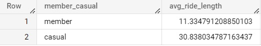
The minimum ride length looks the same, but the maximum ride length is impressive 572 minutes for Casuals versus 25 minutes for Members.
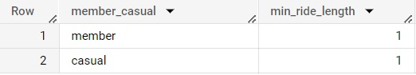
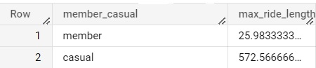
Looking for accuracy, I calculated the median ride length. This way, we can determine the middle value that separates the longer and shorter rides and provides a more representative measure.
Helping mitigate the influence of outliers and providing a clear understanding of the typical ride length within each group.
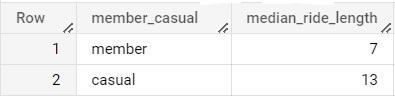
Now let’s compare the quarters by calculating the number of rides made by each group.
First Quarter
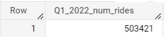
Second Quarter
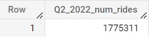
Third Quarter
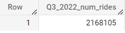
Fourth Quarter
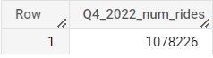
Doing it we can determine that most rides take place during Summer.
X. Analysis in R-Programming Language
As I transitioned from SQL to R, I merged and analyzed four quarters of data.
Combining these quarters into a single dataset in R, using its powerful analytical capabilities to gain insights and identify patterns.
This transition will eliminate repetitive tasks and allow data manipulation and analysis to be performed more effectively.
We can retrieve the Minimum, Median, Mean and Maximum of the whole year now.
Results from the total rides during the whole year.
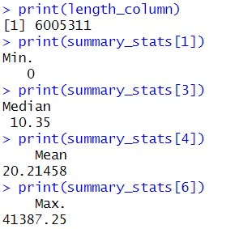
Compare all those measurements between the two groups during the whole year.
Compared ride length measurements during 2022 between Casual and Members.
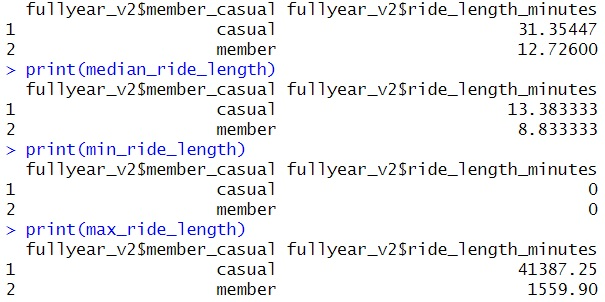
Now we will create a Tibble with the customer type, number of rides, and average ride duration comparing them during the week.
Tibble
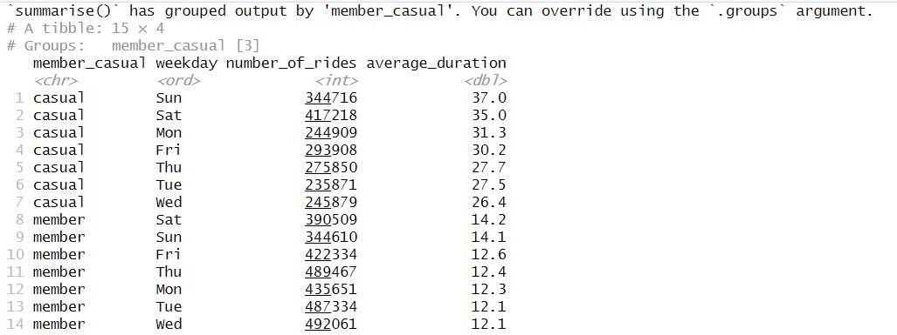
On R we can also create a Visualization to bring more information when we are analysing our dataset.
This Vizualization can quickly show us the proportion and the distribution of rides during the whole year on weekdays,
comparing both groups of user types.
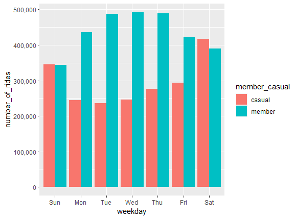
XI. Support Visualization
Now we will use Tableau Public to create beautiful aesthetic visualizations, to showcase key findings
and interesting patterns about our data, in a way that is simple and clear to make data-driven decisions.
Additionally, I will create an interactive dashboard to show how those key patterns change over time, interacting between the graphics.
I uploaded the whole year dataset created in R order to start creating visualizations in Tableau.
Donut Chart
Decided to create a Donut Chart, representing the total rides in the middle and comparing the total annual rides by each customer type.
We found that more than 60% of our customers are Members and almost 40% are Casuals. With over 4 million rides each year.

Pie Chart
After that, I created two Pie Charts to represent both groups and show their bike type preference.
Casuals are the only docked bicycle users.
Members prefer classic bikes for over 65% of their rides.

Bar Chart
To understand the pattern of the number of rides by season I used a Bar Chart, showing both customer types by the number of rides for each season.
The highest service usage is during the Summer Season for both types of members. In contrast, Casuals account for only 1.28% of usage,
while Members account for only 5.31% in the Winter Season.

Column Chart
Checking the weekly usage I made a Column Chart, where we represent the days of the week and the total annual rides by each customer type.
During the week, Members use the service more consistently than Casual riders, who use it more on Saturdays and Sundays.

Line Charts
It is possible to identify the median length of each member type during the whole year, creating a Line Chart to represent it.
We can see that Casuals use the service for more time, ranging from 2 minutes to 5 minutes longer than Members.

I created a second Line Chart to analyze usage by the hour. Now it is possible to plan and anticipate when those rides will get longer.
Even if Casual users tend to use the service for 1 or 2 minutes more, we can see the peak happening from midday.

Demographic Maps
Willing to identify the top 3 stations and their location we created two Map visualizations with Bar Charts below representing each station.
The 3 most famous stations as starting and ending points for both groups are "Monroe Street", "North Boulevard" and "Grand Avenue".
Those stations are all located near famous tourist attractions and Chicago's City Centre. We can see how those stations are most used by Casual riders.


XII. Cyclistic Bike-Share Dashboard
Lastly, I created a Dashboard that presented all of my research's key findings in an easy-to-use way
and allows users interact with the graphs to better understand them and explore relevant findings and patterns.

XIII. Final Recommendations
- Create an integrated phone application to track your rides and offer live promotions for existing members.
Add special features for Members to record their progress and rides, including maps, bike availability at each station,
offers and achievements. - Introduce a Referral Program where existing Members can earn rewards or discounts by referring Casuals to join the membership.
Promote this program on social media and encourage Members to share their referral codes with their friends, family,
and social networks. - Share the advantages of membership via social media platforms. These include unlimited rides throughout the year, priority access to bikes,
exclusive discounts, and achievement perks that demonstrate sustainability and C02 reductions. - Bike-sharing for Everybody, showing how the service covers different lifestyles and needs such as daily commuting or frequent leisure rides.
Share tips and tricks for making the most of your subscription including recommended bike routes and popular attractions accessible through the bike-sharing service. - Make Limited-Time social media promotions targeted at Casual to encourage them to upgrade to the membership plan.
Offering trials and discounts, especially in the low seasons. - Utilize Targeted Advertising Campaigns on social media platforms to reach Casuals who may be more likely to convert to memberships. Utilizing insight into bike types, peak usage times and preferred days of the week to tailor ads.